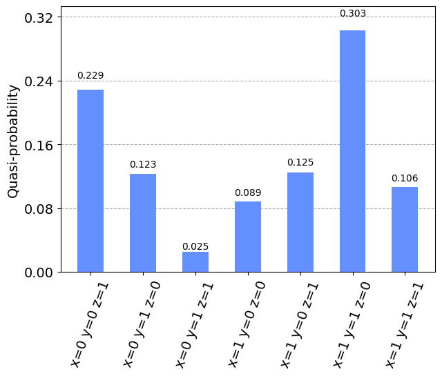

Tutorial: Minimum Eigen Optimizer¶
For original tutorial refer to https://qiskit.org/documentation/optimization/tutorials/03_minimum_eigen_optimizer.html
[ ]:
! pip install qiskit_optimization
[8]:
from typing import List, Tuple
import numpy as np
from qiskit.utils import algorithm_globals, QuantumInstance
from qiskit.algorithms import QAOA, NumPyMinimumEigensolver
from qiskit.visualization import plot_histogram
from qiskit_optimization.algorithms import (
MinimumEigenOptimizer,
RecursiveMinimumEigenOptimizer,
SolutionSample,
OptimizationResultStatus,
)
from qiskit_optimization import QuadraticProgram
from qiskit_braket_provider import AWSBraketProvider
Converting a QUBO to an Operator¶
[5]:
# create a QUBO
qubo = QuadraticProgram()
qubo.binary_var("x")
qubo.binary_var("y")
qubo.binary_var("z")
qubo.minimize(
linear=[1, -2, 3], quadratic={("x", "y"): 1, ("x", "z"): -1, ("y", "z"): 2}
)
print(qubo.export_as_lp_string())
\ This file has been generated by DOcplex
\ ENCODING=ISO-8859-1
\Problem name: CPLEX
Minimize
obj: x - 2 y + 3 z + [ 2 x*y - 2 x*z + 4 y*z ]/2
Subject To
Bounds
0 <= x <= 1
0 <= y <= 1
0 <= z <= 1
Binaries
x y z
End
[6]:
op, offset = qubo.to_ising()
print(f"offset: {offset}")
print("operator:")
print(op)
offset: 1.5
operator:
-1.75 * ZII
+ 0.25 * IZI
+ 0.5 * ZZI
- 0.5 * IIZ
- 0.25 * ZIZ
+ 0.25 * IZZ
[7]:
qp = QuadraticProgram()
qp.from_ising(op, offset, linear=True)
print(qp.export_as_lp_string())
\ This file has been generated by DOcplex
\ ENCODING=ISO-8859-1
\Problem name: CPLEX
Minimize
obj: x0 - 2 x1 + 3 x2 + [ 2 x0*x1 - 2 x0*x2 + 4 x1*x2 ]/2
Subject To
Bounds
0 <= x0 <= 1
0 <= x1 <= 1
0 <= x2 <= 1
Binaries
x0 x1 x2
End
Solving a QUBO with the MinimumEigenOptimizer¶
[13]:
algorithm_globals.random_seed = 10598
quantum_instance = QuantumInstance(
AWSBraketProvider().backends(local=True)[0],
seed_simulator=algorithm_globals.random_seed,
seed_transpiler=algorithm_globals.random_seed,
)
qaoa_mes = QAOA(quantum_instance=quantum_instance, initial_point=[0.0, 0.0])
exact_mes = NumPyMinimumEigensolver()
[14]:
qaoa = MinimumEigenOptimizer(qaoa_mes) # using QAOA
exact = MinimumEigenOptimizer(
exact_mes
) # using the exact classical numpy minimum eigen solver
[15]:
exact_result = exact.solve(qubo)
print(exact_result)
optimal function value: -2.0
optimal value: [0. 1. 0.]
status: SUCCESS
[16]:
qaoa_result = qaoa.solve(qubo)
print(qaoa_result)
optimal function value: -2.0
optimal value: [0. 1. 0.]
status: SUCCESS
Analysis of Samples¶
[17]:
print("variable order:", [var.name for var in qaoa_result.variables])
for smpl in qaoa_result.samples:
print(smpl)
variable order: ['x', 'y', 'z']
SolutionSample(x=array([0., 1., 0.]), fval=-2.0, probability=0.07031249999999999, status=<OptimizationResultStatus.SUCCESS: 0>)
SolutionSample(x=array([0., 0., 0.]), fval=0.0, probability=0.0625, status=<OptimizationResultStatus.SUCCESS: 0>)
SolutionSample(x=array([1., 1., 0.]), fval=0.0, probability=0.08496093750000001, status=<OptimizationResultStatus.SUCCESS: 0>)
SolutionSample(x=array([1., 0., 0.]), fval=1.0, probability=0.08007812500000001, status=<OptimizationResultStatus.SUCCESS: 0>)
SolutionSample(x=array([0., 0., 1.]), fval=3.0, probability=0.1611328125, status=<OptimizationResultStatus.SUCCESS: 0>)
SolutionSample(x=array([1., 0., 1.]), fval=3.0, probability=0.20800781249999997, status=<OptimizationResultStatus.SUCCESS: 0>)
SolutionSample(x=array([0., 1., 1.]), fval=3.0, probability=0.16015625, status=<OptimizationResultStatus.SUCCESS: 0>)
SolutionSample(x=array([1., 1., 1.]), fval=4.0, probability=0.1728515625, status=<OptimizationResultStatus.SUCCESS: 0>)
[18]:
def get_filtered_samples(
samples: List[SolutionSample],
threshold: float = 0,
allowed_status: Tuple[OptimizationResultStatus] = (
OptimizationResultStatus.SUCCESS,
),
):
"""Returns filtered samples."""
res = []
for sample in samples:
if sample.status in allowed_status and sample.probability > threshold:
res.append(sample)
return res
[19]:
filtered_samples = get_filtered_samples(
qaoa_result.samples,
threshold=0.005,
allowed_status=(OptimizationResultStatus.SUCCESS,),
)
for s in filtered_samples:
print(s)
SolutionSample(x=array([0., 1., 0.]), fval=-2.0, probability=0.07031249999999999, status=<OptimizationResultStatus.SUCCESS: 0>)
SolutionSample(x=array([0., 0., 0.]), fval=0.0, probability=0.0625, status=<OptimizationResultStatus.SUCCESS: 0>)
SolutionSample(x=array([1., 1., 0.]), fval=0.0, probability=0.08496093750000001, status=<OptimizationResultStatus.SUCCESS: 0>)
SolutionSample(x=array([1., 0., 0.]), fval=1.0, probability=0.08007812500000001, status=<OptimizationResultStatus.SUCCESS: 0>)
SolutionSample(x=array([0., 0., 1.]), fval=3.0, probability=0.1611328125, status=<OptimizationResultStatus.SUCCESS: 0>)
SolutionSample(x=array([1., 0., 1.]), fval=3.0, probability=0.20800781249999997, status=<OptimizationResultStatus.SUCCESS: 0>)
SolutionSample(x=array([0., 1., 1.]), fval=3.0, probability=0.16015625, status=<OptimizationResultStatus.SUCCESS: 0>)
SolutionSample(x=array([1., 1., 1.]), fval=4.0, probability=0.1728515625, status=<OptimizationResultStatus.SUCCESS: 0>)
[20]:
fvals = [s.fval for s in qaoa_result.samples]
probabilities = [s.probability for s in qaoa_result.samples]
[21]:
np.mean(fvals)
[21]:
1.5
[22]:
np.std(fvals)
[22]:
1.9364916731037085
[23]:
samples_for_plot = {
" ".join(
f"{qaoa_result.variables[i].name}={int(v)}" for i, v in enumerate(smpl.x)
): smpl.probability
for smpl in filtered_samples
}
samples_for_plot
[23]:
{'x=0 y=1 z=0': 0.07031249999999999,
'x=0 y=0 z=0': 0.0625,
'x=1 y=1 z=0': 0.08496093750000001,
'x=1 y=0 z=0': 0.08007812500000001,
'x=0 y=0 z=1': 0.1611328125,
'x=1 y=0 z=1': 0.20800781249999997,
'x=0 y=1 z=1': 0.16015625,
'x=1 y=1 z=1': 0.1728515625}
[24]:
plot_histogram(samples_for_plot)
[24]:

RecursiveMinimumEigenOptimizer¶
[25]:
rqaoa = RecursiveMinimumEigenOptimizer(
qaoa, min_num_vars=1, min_num_vars_optimizer=exact
)
[26]:
rqaoa_result = rqaoa.solve(qubo)
print(rqaoa_result)
optimal function value: -2.0
optimal value: [0. 1. 0.]
status: SUCCESS
[27]:
filtered_samples = get_filtered_samples(
rqaoa_result.samples,
threshold=0.005,
allowed_status=(OptimizationResultStatus.SUCCESS,),
)
[28]:
samples_for_plot = {
" ".join(
f"{rqaoa_result.variables[i].name}={int(v)}" for i, v in enumerate(s.x)
): s.probability
for s in filtered_samples
}
samples_for_plot
[28]:
{'x=0 y=1 z=0': 1.0}
[29]:
plot_histogram(samples_for_plot)
[29]:

[ ]: